what to put first.
Measurement began our might.
 W. B. Yeats, "Under Ben Bulben"
W. B. Yeats, "Under Ben Bulben"
| To compose your application's interface, you just drag objects off a palette, drop them on a window or other "surface," and then manipulate and arrange them into an effective user interface. This chapter introduces you to Interface Builder by showing how to compose the elements of your interface. Working with Interface Builder |
1
Composing
the Interface
Opening a nib file
Creating a nib file
Using palettes
Placing interface objects
Sizing windows and panels
Initializing text
Sizing interface objects
Positioning and sizing precisely
Duplicating objects
Moving objects to other windows
Arranging objects
Removing objects
Making interface objects the same size
Shrinking objects to their minimum size
Grouping objects
Layering objects
Creating menus
Creating matrices of objects
| The last thing one knows in constructing a work is what to put first. Measurement began our might. |
| OPENING A NIB FILE |
| Double-click a nib file in Project Builder. |
| Or |
| Double-click a nib file in the nib filewindow. |
| Or |
| In Interface Builder, choose the Open command and select a file in the Open Panel. |
| CREATING A NIB FILE |
| Choose one of the panels in the New Modules submenu of the Document menu. |
| Or |
| Choose New Empty from the New Modules submenu, then drag a window or panel from the Windows palette. |
| Or |
| Choose New Application from the Document menu. |
| Nib files are created for you automatically when you create applications in Project Builder. But sometimes you need to create nib files directly in Interface Builder, typically when you want to add additional windows and panels to your application.
To create a new panel (and the nib file that contains it) choose the desired panel type from the New Module submenu of the Document menu. For example, if you choose New Info Panel, you'll get the following template panel: 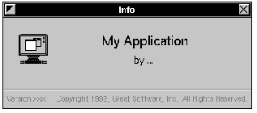 Most commands of the New Module submenu create new nib files that contain a special kind of ready-made panel; your application can later load these nib files when it needs them. The New Empty command just creates an empty nib file; you must create the windows and panels for it by dragging these objects from the Windows palette. The New Application command in the Document menu can create your application's main nib file (a nib file with the owner of Application) if that hasn't already been done for you in Project Builder.
An UNTITLED nib file window appears for each newly-created nib file. After you make changes to an interface, remember to save the nib file. Choose Save from the Document menu and specify a path and file name in the Save Panel. Interface Builder may ask if you want to insert the file into your project; you usually confirm by clicking Yes. 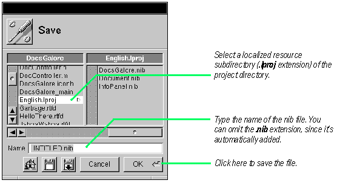
|
| USING PALETTES |
| 1 | Choose the palette you want. | |
| 2 | Drag an object from the palette to the appropriate "surface." | |
| 3 | Release the mouse button. |
| The palette window of Interface Builder displays all currently loaded palettes. Each palette is represented in the window by an icon. If more than four palettes are loaded, a horizontal scroll bar gives access to those palette icons that are not visible. Choose a palette and then drag an object from the palette and drop it on an appropriate surface.
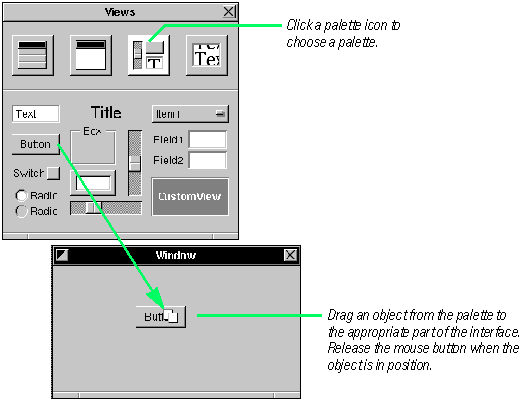 The palettes for the Application Kit are loaded by default. These palettes provide windows, panels, browsers, scroll views, buttons, text fields, and a number of other interface objects. You can also load palettes for other kits, such as the Enterprise Objects Framework, and you can load your own custom palettes. Note: Where you "drop" a window or panel is important, since that sets its initial position on the screen, the location that appears when the application starts up or when its nib file is loaded. You can have auxiliary nib files, such as an Info panel, that you load into your program only when you need to. The programming technique of loading nib files on demand (lazy instantiation) is described in Chapter 5, "Working with Multiple Nib Files."
When you save an interface in Interface Builder, it's archived to a nib file. Every application has a main nib file, which contains the main menu and often a window and other objects. A nib file (actually a file package) has the extension .nib. This nib file contains: |
| Archived objects, in their hierarchy | ||
| Sound and image data | ||
| Information on custom classes | ||
| Connection information |
| Archived Objects The nib file stores encoded information on kit objects, including their size, location, and position in the object hierarchy (for View objects, determined by superview/subview relationship). At the top of the hierarchy of archived objects is the File's Owner object, a proxy object that points to the actual object that owns the nib file. (For a description of File's Owner, see the concept summary on File's Owner, First Responder, and Font Manager in Chapter 3.) Sounds and Images Class References Connection Information When You Load a Nib File |
| The run-time system unarchives the objects from the object hierarchy, allocating memory for each object and sending it a read: message. After its unarchived, an object receives awake and finishUnarchiving messages. | ||
| It unarchives each proxy object and queries it to determine the identity of the class that the proxy represents. Then it creates an instance of this custom class (alloc and init) and frees the proxy. | ||
| The system unarchives the connector objects and allows them to reestablish connections, including connections to File's Owner. | ||
| As the final step, the run-time system sends awakeFromNib to all objects that were derived from information in the nib file, signalling that the loading process is complete. |
"Where Palette Objects Go" later in this chapter illustrates the proper "surfaces" for interface objects.
See the task "Managing Palettes" in Chapter 5 for instructions on loading and installing palettes. |
| PLACING INTERFACE OBJECTS |
| 1 | Select the object you want to move. | |
| 2 | Drag the object to the new location in the window or panel. |
| To move an object around the "surface" of a window or panel, select the object and drag it with the mouse. The currently selected object has resizing handles around its perimeter.
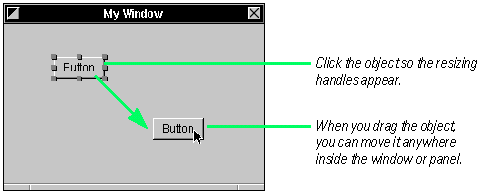 When you move an object, make sure that the mouse pointer is inside the object and not on a resize handle. For greater precision, select an object and press the arrow keys; this moves the object an incremental distance in the required direction. If the alignment grid is off, this distance is one pixel; if it is on, it is the distance of the grid. You can adjust the size and location of objects precisely by specifying their origins, width, and height in the Size display of the object's Inspector. See "Positioning and Sizing Precisely" later in this chapter for details.
You can select multiple objects and then move, copy, or do other things with them as a group. There are two ways to select more than one object: |
| Hold down the Shift key while you click objects in succession. | ||
| Click in an empty area, then draw a "rubberbanding" rectangle around all objects you want selected. |
| After making the selection, press (don't momentarily click) the mouse pointer on one of the objects and drag the group to the new location. (Or do another suitable operation, such as copy and paste.)
To de-select an object in a grouped selection, hold down the Shift key and click that object. You cannot do sizing operations on multiple selected objects. To select all objects in a window or panel, first select the window or panel, and then choose the Select All command from the Edit menu. You can select all items in the Instances or Classes display by choosing Select All from the Edit menu. The command-key equivalent for Select All is Command-a.
You can put windows and panels anywhere in the work space. Nothing contains them except the screen. 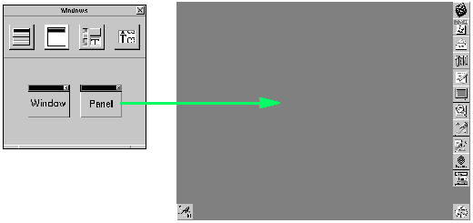
You put items from the Views and TextViews palettes anywhere within the bounds of a window or panel. These items include buttons, labels, pop-up menus, fields, boxes, text fields, scroll views, browsers, and custom Views. 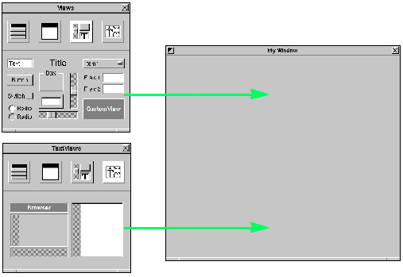 You drag a menu cell from the Menu palette and drop it in the application's menu. When you release the mouse button, Interface Builder inserts the cell between the two menu commands underneath it. 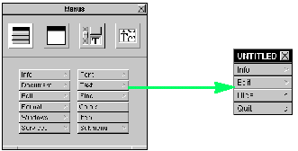 Some palettes, like the one for the Enterprise Objects Framework, carry objects that do not appear on an interface. These usually are controller objects that perform management or computational functions. Drop these objects anywhere on the Instances display of the nib file window. 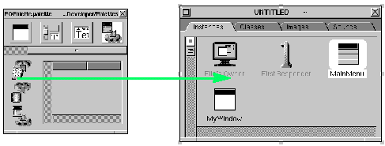
|
| SIZING WINDOWS AND PANELS |
| Drag the resize bar in the direction you want the window to grow. |
| Or |
| Bring up the Inspector panel and enter the dimensions in the Size view. |
| After you drag a window or panel from the Windows palette and drop it on the screen, you'll probably want to resize the object to a suitable dimension. To resize a window, drag the resize bar in the required direction.
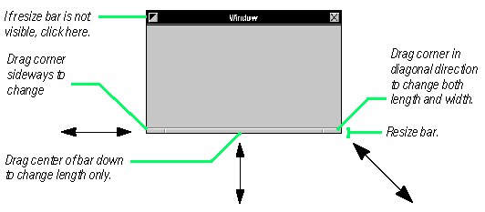 Many panels and some windows are not set for resizing and therefore do not have a resize bar visible. To make this bar temporarily visible for resizing in Interface Builder, click the miniaturize button in the upper-left corner of the window or choose the Resize Window command from the Format menu. You can also resize windows and panels with greater precision by entering the exact dimensions in the Size display of the Inspector panel. To bring up the Size Inspector for a window, select the window by clicking its title bar, then choose Inspector from the Tools menu (or press Command-3). 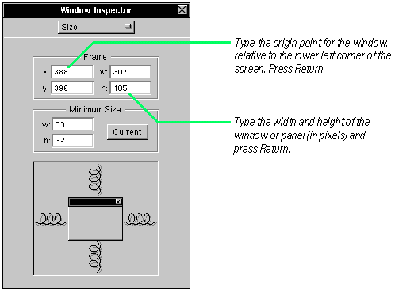 You can also use the Inspector panel to size View objects with numerical exactness. See "Positioning and Sizing Precisely" for further information. Also see "The Coordinate System of Interface Builder" for some conceptual background. |
| INITIALIZING TEXT |
| 1 | Select the object. | |
| 2 | Double-click the text inside the interface object. | |
| 3 | Edit the text. | |
| 4 | Deselect the text by clicking outside of it. |
| Many of the palette objects include text as a component. Buttons of all sorts usually have titles, boxes usually name the elements they group, and so on. Interface Builder initially sets the text in most of these objects to the name of the object itself (such as "Button" or "Text"). After you drag the palette object onto a window or panel, you will probably want to delete these text strings or rename them to something meaningful. This text is what is initially displayed when your application loads the nib file; your application can later change the text.
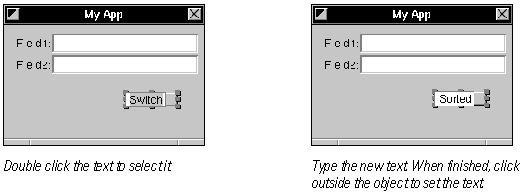 Once text is selected, you can move the cursor among the characters by pressing the left and right arrow keys; you can delete characters by pressing the Delete key. Text fields are initialized to "Text" (which you'll almost always want to delete). To delete this, double-click it and press the Delete key. Matrices--compound objects, such as radio buttons and form fields--need a slightly different procedure for selecting text for initialization: You must double-click the embedded text item twice, the first time to select the embedded object, and the second time to select the text inside the object. 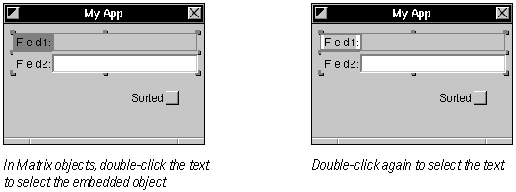 "Creating Matrices of Objects" later in this chapter describes how to create these compound objects. Also see "Compound Objects" in Chapter 2 for a conceptual summary of Matrix objects and other compound objects. |
| SIZING INTERFACE OBJECTS |
| 1 | Select an object. | |
| 2 | Drag a resize handle in the desired direction. |
| Interface objects in Interface Builder scale to any practical dimension. You can, for instance, increase the size of a button so it fills a window. Most interface objects, however, do not scale below a certain minimum size of usefulness.
To size an object you must first select it. A selected object has resize handles--small, gray rectangles--around its perimeter. Drag one of these handles in the direction you want the object to increase (or decrease) in size. 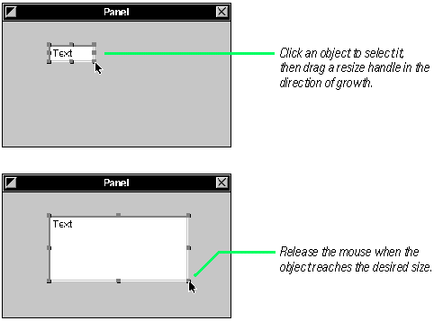 To affect just one dimension of the object, drag a top, bottom or side handle. To adjust both dimensions simultaneously, drag one of the corner handles. To size both dimensions proportionally, hold down the Shift key while you drag a corner resize handle. You can adjust the size and location of objects precisely by specifying their origins, width, and height in the Size display of the object's Inspector panel. See "Positioning and Sizing Precisely" on the following page for details. |
| POSITIONING AND SIZING PRECISELY |
| 1 | Select an object. | |
| 2 | Choose the Size Inspector for that object. | |
| 3 | Modify the object's origin point or its dimensions. |
| You can move and resize objects in your interface with numerical exactness using the Inspectors for those objects. You'll occasionally find need for such exactness, such as when you want to size a custom view to the same dimensions as the image that it will display. More frequently you'll use this method to align objects or make sure they're the same size. To size and move objects with precision, select a reference object and then choose 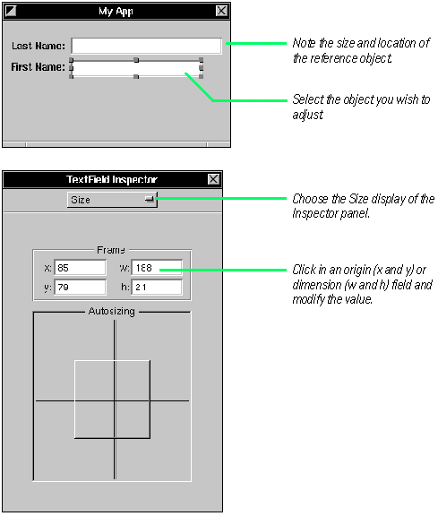 When you press Return in an origin or dimension field, the object moves to the new position or expands or contracts to the new size. Tip: You can also move selected objects incrementally--and precisely--by pressing |
| DUPLICATING OBJECTS |
| 1 | Select an object. | |
| 2 | Copy the object to the pasteboard. | |
| 3 | Paste the object back to the interface. | |
| 4 | Position the new object. |
| To duplicate an object, select it and then copy and paste it just as you would with geometric shapes in a drawing application. The copied object has the dimensions and most other attributes of the original object.
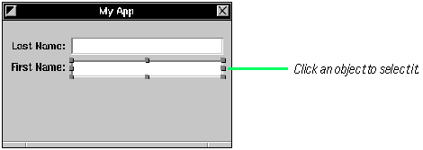 Choose Copy from the Edit menu, then choose Paste from the Edit menu. 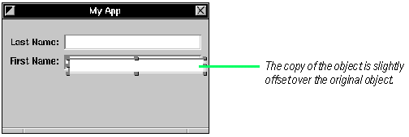 The new object is offset slightly from the original one to help you select it. Move the new object to its new location. In addition to the objects that appear on the interface, you can copy your custom non-UI objects--represented as cubes in the icon mode of the nib file window--as well as your windows and panels. Just click to select them and then copy and paste them. Tip: Instead of choosing Copy and Paste from the menu, you can press Command-c (Copy) and Command-v (Paste). You can also duplicate groups of selected objects by copying them and then pasting them. See "Selecting Multiple Objects" earlier in this chapter for details on making multiple selections of objects. |
| MOVING OBJECTS TO OTHER WINDOWS |
| 1 | Select one or more objects. | |
| 2 | Alternate-drag the objects to the other window or panel. |
| To move objects from one window or panel to another, drag them between windows while holding down the Alternate key.
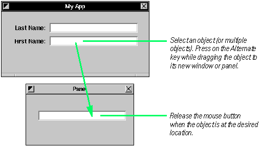 If you want to copy rather than move the selected objects (in other words, the original objects remain in the original location), you have two alternatives: |
| Copy the objects using the Copy command; click the other window or panel to activate it, and use the Paste command to copy the objects from the pasteboard. | ||
| Copy and paste the objects in one window, than Alternate-drag the duplicated objects to their new window or panel. |
| Copying Objects to Other Interfaces
With the same Alternate-drag technique, you can copy objects between different nib files. Simply select a group of objects in one nib file and, while pressing the Alternate key, drag and drop those objects on the appropriate "surface" of the other nib file. Both nib files must be open when you initiate the copy operation. You can copy entire windows or panels as well as custom, non-UI objects between interfaces. The surface you drop objects onto must be compatible: |
| Non-UI objects must be dropped over the Instances display of the nib file window. | ||
| View objects are dropped over a window or panel or over the Instances display. | ||
| Windows and panels can be dropped anywhere on the screen. |
| The basic technique of Alternate-drag also copies the connections among selected objects. See "Copying interconnected connections" in Chapter 3, "Making and Managing Connections" for details.
|
| ARRANGING OBJECTS |
| 1 | Set the characteristics of the grid in the Alignment panel. | |
| 2 | Turn on the grid. | |
| 3 | Align objects with the grid. |
| When you compose your interface, you usually want to arrange the objects in that interface in some appealingly regular way. You want buttons, for instance, to be aligned on the same invisible horizontal or vertical line. Or you want the distance between text fields in a form application to be exactly the same. Interface Builder gives you a set of tools for arranging objects.
Every window or panel has a grid associated with it. You may turn this grid off and on. When it is on and you move an object, an edge of that object "snaps," like a nail to a magnet, to the adjacent intersecting lines of the grid. You set the dimensions of this grid and the edges of alignment in Interface Builder's Alignment panel. To bring up this panel, choose the Alignment command in the Align menu (the Align menu is a submenu of the Format menu). 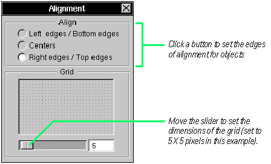 The buttons in the Align section of the Alignment panel determine what point or edge of interface objects snaps to the grid. 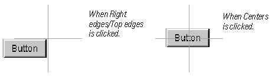 Once you have your grid set up, make sure the grid is turned on: Now align the objects, either individually or as a group, using the grid. 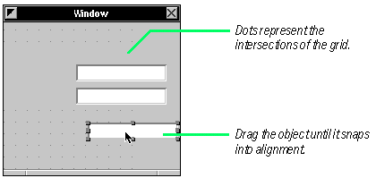 There are other ways to align objects that don't require using the mouse. With the grid turned off, you can drag view objects from a palette and visually align them as precisely as possible. Then set the grid spacing, turn the grid on, and choose the Align To Grid command. Once the grid is set and on, align the objects, either individually or as a group. 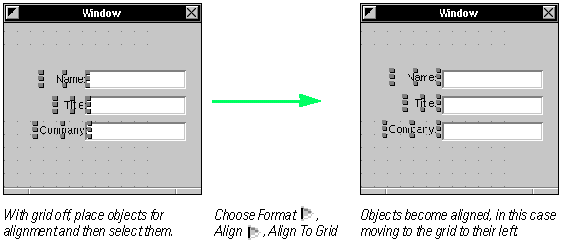 With the Align To Grid command, the direction of alignment is toward the origin point of the window or panel (in other words, toward the lower-left corner). You should be aware of this when placing objects for later alignment. Tip: You can align selected objects to a grid, singly or as a group, by pressing the arrow keys in the direction of alignment. When the grid is turned on, the unit of increment changes from one pixel to whatever the grid spacing is Making Columns and Rows of Objects It is more efficient to align groups of objects than to align single objects successively. With the Make Column and Make Row commands, Interface Builder aligns groups of selected objects to a reference object. You designate the reference object by the way you select multiple objects.: |
| If you press the Shift key while clicking objects in succession, the first object clicked is the reference object. | ||
| If you draw a selection rectangle around a group of objects, and so select objects simultaneously, the topmost object in the selection (usually the most recently added object) is the reference object. |
| For most purposes, Shift-clicking objects is the preferred method because it permits more control.
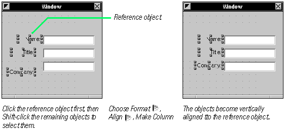 |
| REMOVING OBJECTS |
| 1 | Select one or more objects. | |
| 2 | Choose Cut from the Edit menu. |
| To delete objects from an interface, select the objects and choose the Cut command.
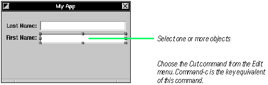 You can also delete an object by pressing the Delete key, but the differences between the Delete key and the Cut command are significant. The Cut command saves the selected objects to the pasteboard, so you can retrieve the objects with the Paste command (Command-v). The Delete key permanently deletes the selected items. |
| attention panels | ||
| modal tools | ||
| "spring-loaded" mode (while mouse or key down) |
| But these modes should be freely chosen, provide an easy way out, be visually apparent, and keep the user in control.
At the same time, you should try to anticipate what users will do and ease their way, reducing the actions they must perform. Give them freedom, but still act on their behalf without waiting for their instructions. These helping actions should be simple and convenient, like, in the Open panel, preselecting a directory that is probably in the path of the final selection. Focus on the Mouse |
| Direct manipulation | ||
| Targeted action | ||
| Modal tool |
| See NEXTSTEP User Interface Guidelines for more on action paradigms and much more information important to the design of your user interface.
|
| MAKING INTERFACE OBJECTS THE SAME SIZE |
| 1 | Select the reference object. | |
| 2 | Add to the same selection the objects that you want resized. | |
| 3 | Choose the Same Size command. |
| To lend a look of consistency to your interface, you often want to make similar objects have the same size. Buttons across the bottom of an attention panel, for instance, should be the same exact size. Interface Builder gives you an easy way to do this, allowing you resize selected objects to a reference object. You designate the reference object differently, depending on your method of selection: |
| If you press the Shift key while clicking objects in succession, the first object clicked is the reference object. | ||
| If you draw a selection rectangle around a group of objects, selecting the objects simultaneously, the topmost object in the selection (usually the most recently added object) is the reference object. |
| Making objects the same size involves identifying and selecting a reference object, selecting several other objects, and choosing a command.
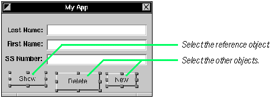 Choose Same Size from the Size submenu (you can find the Size submenu on the Format menu). 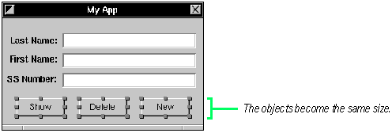 Tip: In most situations, you should select multiple objects by Shift-clicking them because this method gives you more control (you don't always have to keep track of the topmost object as the reference object). |
| SHRINKING OBJECTS TO THEIR MINIMUM SIZE |
| 1 | Select one or more objects. | |
| 2 | Choose Size To Fit. |
| To conserve screen real estate, or to enhance the appearance of your interface, you might want to have view objects just large enough for any text they contain. You can do this with the Size To Fit command.
The Size To Fit command has no affect on matrices, custom views, and some other objects. If you delete the text from a button, text field, or other object that holds text, and then apply the Size To Fit command to it, that object shrinks to its minimum (and probably unusable) size. |
| GROUPING OBJECTS |
| 1 | Select the objects you want grouped. | |
| 2 | Choose the Group command. |
| When you group objects, Interface Builder draws a box around them. The box has a title (initially "Title"). You select, move, copy, and cut and paste the objects within the box as a group. Interface Builder gives you two ways to group objects.
In the first method, you select the objects of the group and choose a menu command. 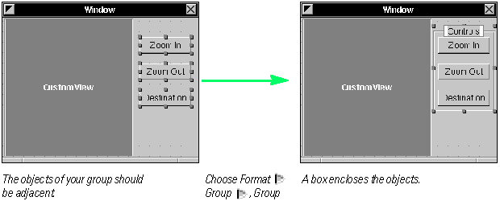 The default title of the box around the grouped objects is "Box." To change this, double-click the title to select it (as in the example above, on the right). Then type the new name for the grouped objects. To ungroup the objects, making each object individually selectable again, select the group and choose Ungroup from the Group menu. You can also use the box object in the Views palette to group objects. First, drag a box onto a window or panel. Then add its contents: 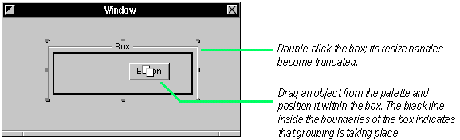 The Group submenu has two other interesting commands. With the Group In ScrollView command, you can automatically bind a Text object (or your own custom View object) to horizontal and vertical scrollbars. With the Group In SplitView, you can group two related views (often a custom view and a browser object) in a split view, which has a sizing bar between the views. See the specifications of the ScrollView and NXSplitView classes in Chapter 2 of the NEXTSTEP General Reference. |
| LAYERING OBJECTS |
| 1 | Select an object. | |
| 2 | Choose Bring To Front or Send To Back. |
| Every object on a window or panel in Interface Builder is on its own layer. That's why when you move one object over another object, the first object moves in front of the second or moves behind it. The most recently added object is generally on the topmost layer. Occasionally, you need to alter the layering order to make an object visible or to have it appear behind other objects. To do this, apply the Bring To Front command or the Send To Back command (on the Format menu) to selected objects. For an example, assume you want two buttons to partly overlay a ScrollView object: 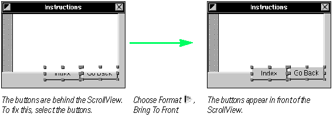 |
| CREATING MATRICES OF OBJECTS |
| 1 | Drag a suitable object from the Views or TextViews palette. | |
| 2 | Alternate-drag a resize handle of the object. |
| You can easily transform certain objects in the standard Interface Builder palettes into matrices of those objects. A matrix (defined by class Matrix) imposes a regular size and intervening distance on a set of identical objects. Matrices afford an easy way to compose forms, arrays of buttons and sliders, and multiple-column browsers. To create a matrix, drag one of these objects to a window or panel: |
| text field | ||
| button | ||
| switch button | ||
| radio button | ||
| form field | ||
| slider (vertical or horizontal) | ||
| browser |
| Then size the object to the maximum dimension you anticipate for a cell in the matrix. Next create the matrix:
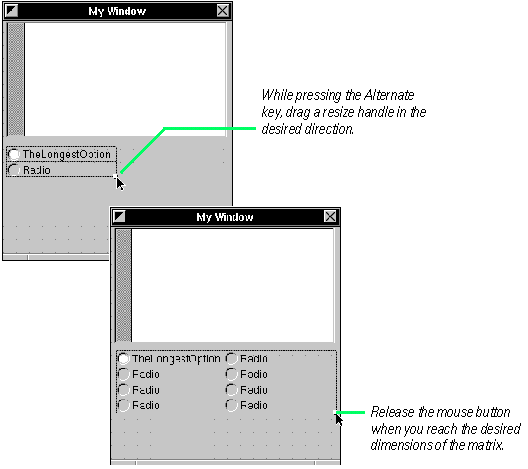 Tip: To make a browser with more than one column, drag a browser object from the TextFields palette onto your interface; then Alternate-drag the right resize handle until the desired number of columns appear. |
| CREATING MENUS |
| 1 | Drag a menu cell from the Menu palette. | |
| 2 | Drop it between two menu cells in your application's menu. |
| Menus are just as important as windows and panels for an interface. Menu commands initiate most of the standard functions of an application, such as printing, opening files, or cutting and pasting text. That's why Interface Builder's Menu palette holds a number of ready-made submenus and menu cells.
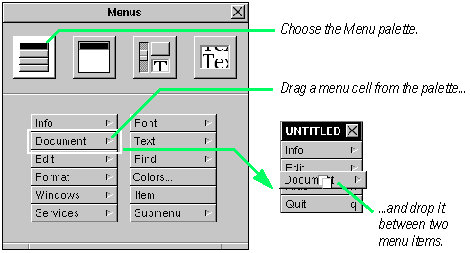 Click several menu cells in your application's main menu and note how some cells in the submenus are dimmed. Dimmed cells indicate that, as the default, the command is inactive until some condition occurs in your code that causes your application to activate the command. You delete a menu cell just you do with any other object in Interface Builder: select it, then choose the Cut command from the Edit menu (Command-x) or press the Delete key. Also, as with other Interface Builder objects that display text, you can easily change the titles of menu cells: |
| Double-click the text to select it | ||
| Type the new title or edit the old one | ||
| Click outside the cell to set the new title |
| You can also do two special tasks with menu cells: re-sequencing and assigning Command keys. By re-sequencing, you change the order in which cells are listed in a menu. By assigning a Command key to a cell, you give the user of your application a command key equivalent--a shortcut way to invoke the command (as Command-x is a shortcut for invoking the Edit menu's Cut command).
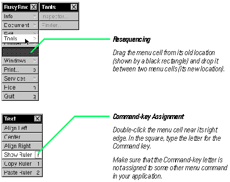 Custom menus In addition to the standard menu commands and submenus, Interface Builder makes it easy for you to compose your own custom menus. Use the Submenu cell in the Menu palette to create custom submenus and use the Item cell for custom menu commands. The Print command is frequently added as a custom cell. 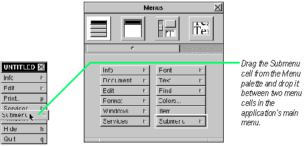 Change the title of Submenu and click the cell to expand it. Then add Item cells from the Menu palette to the new submenu and change their titles. You can make menu cells active or inactive by default. Select the cell and set the Disabled button in the Attributes display of the cell's Inspector. See Chapter 2, "Setting Object Attributes" for more information on using the Inspector panel. See Chapter 3, "Connecting Objects" to learn what you must do to connect menu cells with the objects that are to handle menu commands. |